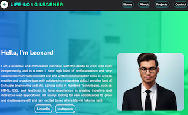

My Projects
-
HTML Semantic Projects
This project focuses on complex content hierarchy. It demonstrates how to handle multiple articles, sections, and nested navigation without falling into the "div soup" trap.
-
Key Semantic Features:
- article & section: : Used to encapsulate independent stories and thematic groupings.
- aside: For related links, advertisements, or "quick facts" that supplement the main content.
- figure & figcaption: To provide context to images, making them more than just visual fluff.
- The Result: A high-performance news site that SEO crawlers love because they can instantly identify the most important headlines.
-
Key Semantic Features:
-
Portfolio Projects
The goal is to develop a high-performance, single-page (or multi-page) website that serves as a central repository for your work, biography, and contact information.
Before coding, it's vital to visualize how the elements sit on the page. Using a "Box Model" approach ensures the layout doesn't break when content is added.

This is the Portfolio project website